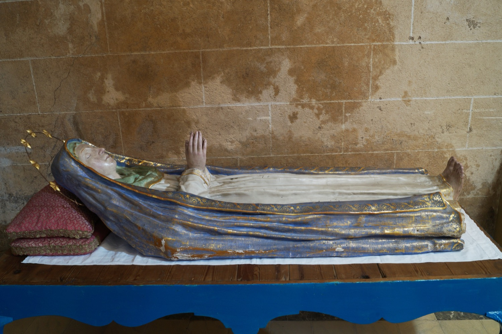

En Mallorca se celebra desde la Edad Media la fiesta de la Asunción de María, conocida popularmente como la Mare de Déu d’Agost. En esta festividad se conmemoran la “Dormición” de la Virgen y su ascensión al cielo en cuerpo y alma. Para celebrarlo, es costumbre que en muchas iglesias se instale un lecho monumental donde se expone la “Virgen Difunta”, una imagen yacente de la Virgen con las manos unidas en actitud de oración. La escultura de la Virgen Difunta de Vilafranca es del siglo XX.